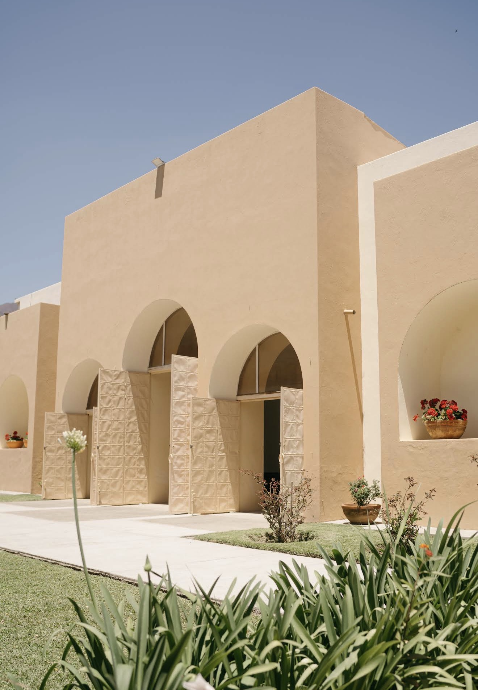
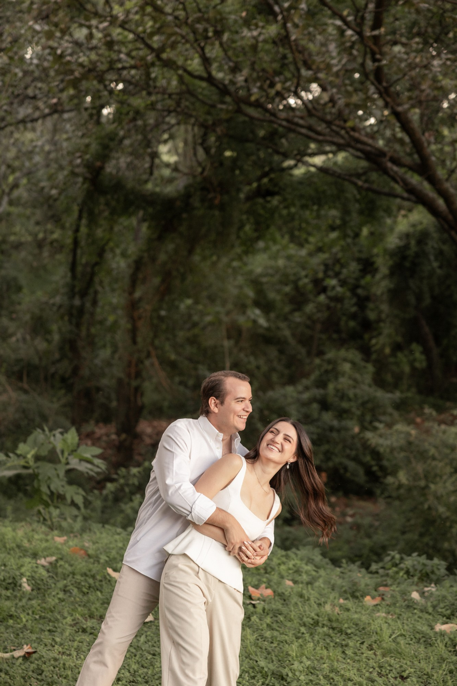
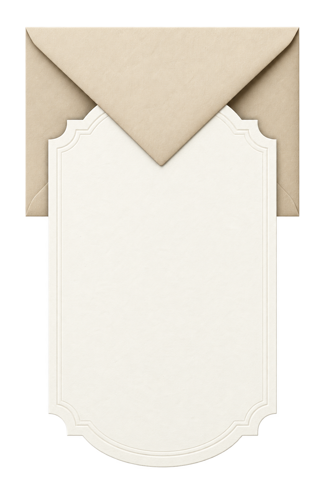
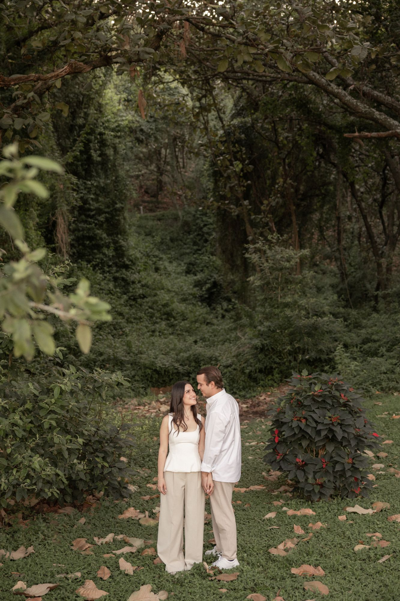
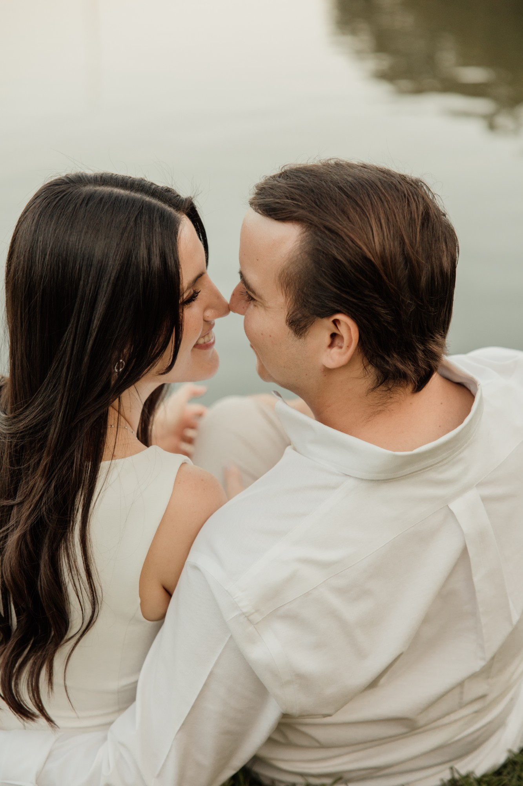
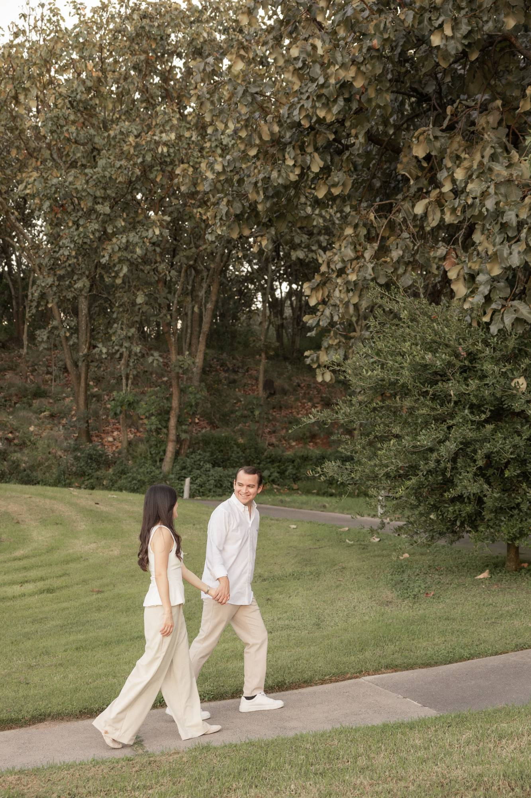
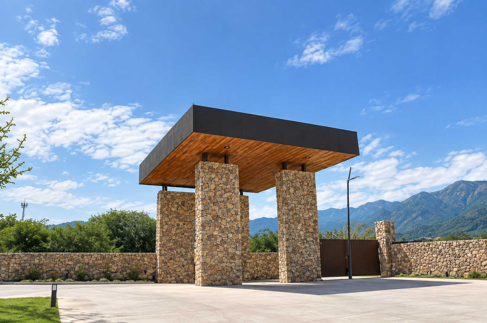

MA↓
 Desliza para descubrir ↓
Desliza para descubrir ↓
Nuestra boda
Marcela& Alan
SÁBADO
FEB27
2027Chapala, Jalisco
Cada vez falta menos
CON TODO NUESTRO CARIÑO
Tenemos el honor de invitarlos a nuestro enlace matrimonial con la bendición de Dios y acompañados de nuestros padres.
Padres de la novia
José Ramos
Ana Elena Gutiérrez
Padres del novio
Saul Zugasti
Lucero Franco




Código de vestimenta
Riguroso formal
Mujeres: LargoHombres: Traje
Los tonos blancos y similares quedan reservados para la novia
Clima promedio en febrero
27°C
Día
13°C
Noche
Los días en Chapala suelen ser templados y soleados, pero la temperatura baja por la noche. Te sugerimos llevar algo de abrigo para disfrutar la recepción.
Solo adultos
Nos encantará compartir este día contigo. Agradecemos tu comprensión, el evento es exclusivo para adultos
Mesa de regalos
Tu presencia es el mejor regalo que podemos recibir. Si deseas tener un detalle con nosotros, puedes contribuir mediante transferencia a la siguiente cuenta:
- Banco
- BBVA
- Titular
- Ana Marcela Ramos
- CLABE
- 012320015055662004
CELEBREMOS JUNTOS
¿Nos acompañas?
Nos hará muy felices compartir este día contigo.